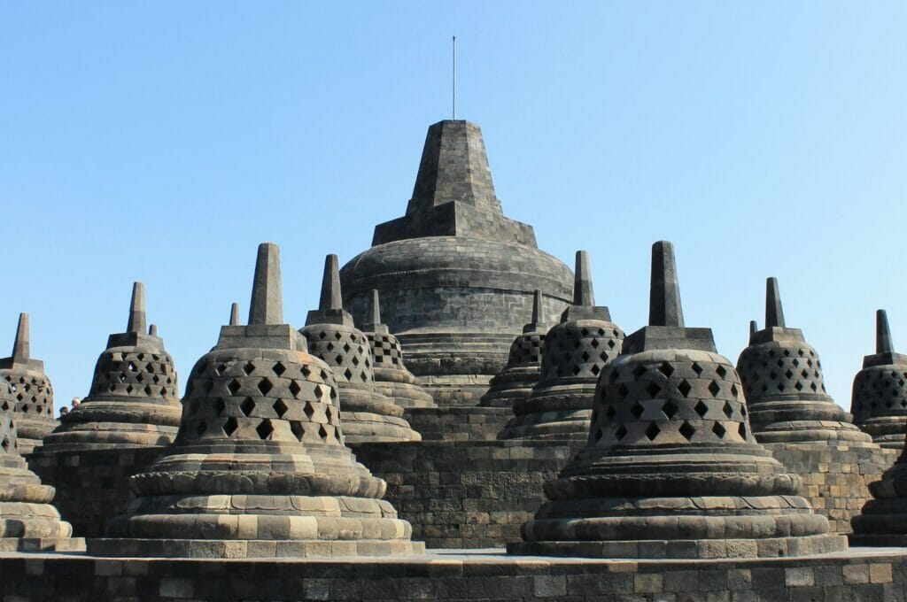
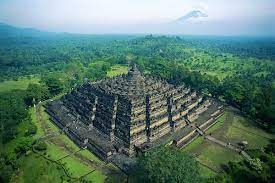

Borobudur Temple is a Buddhist temple located in Borobudur, Magelang, Central Java, Indonesia. This temple is located approximately 100 km southwest of Semarang, 86 km west of Surakarta, and 40 km northwest of Yogyakarta. This temple with many stupas was founded by followers of Mahayana Buddhism around 800 AD during the reign of the Syailendra dynasty. Borobudur is the largest Buddhist temple or shrine in the world, as well as one of the largest Buddhist monuments in the world.
 Tour Type : Pilgrimage
Participants : 1-10 Persons
Price : Rp50.000
Rating : 5 Stars
Categories : Religion & Temple